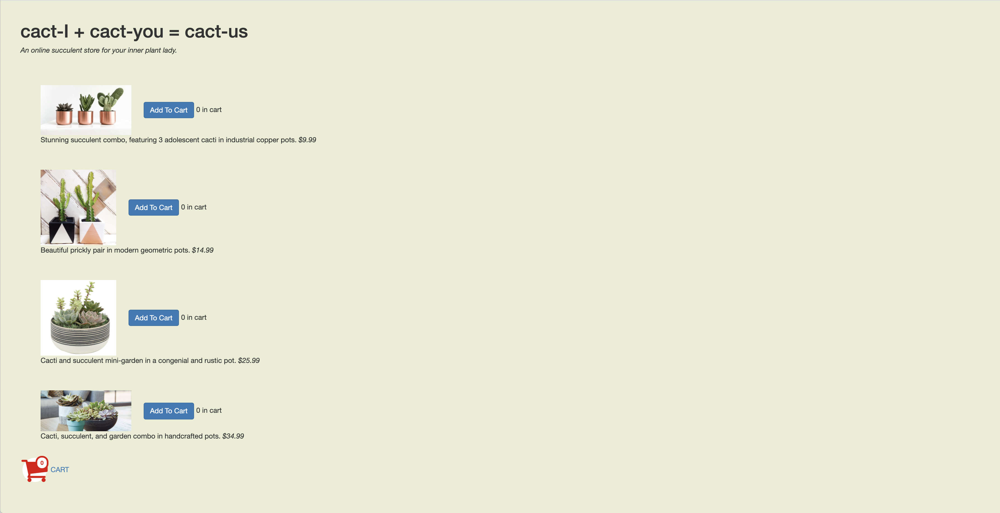
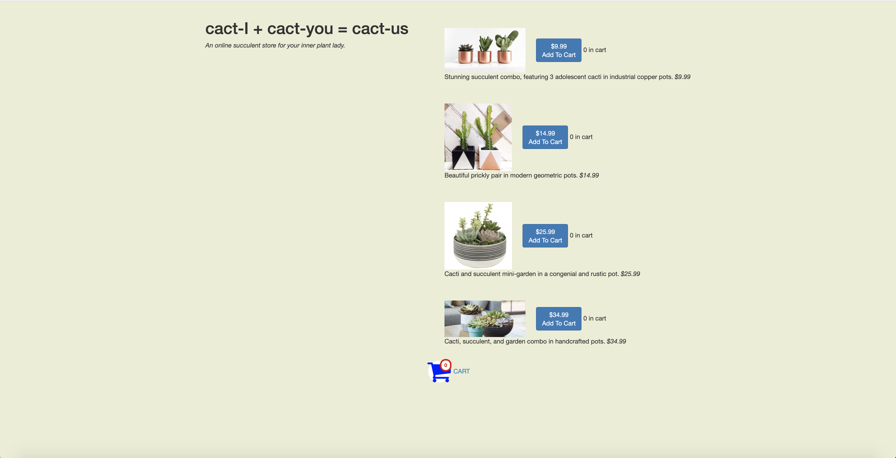
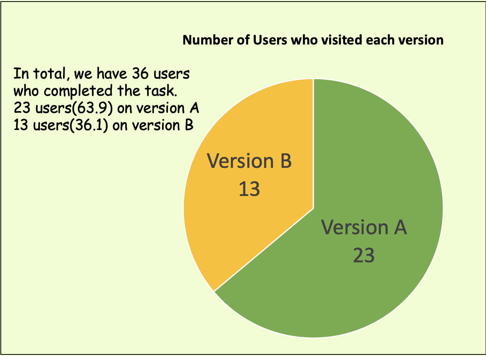
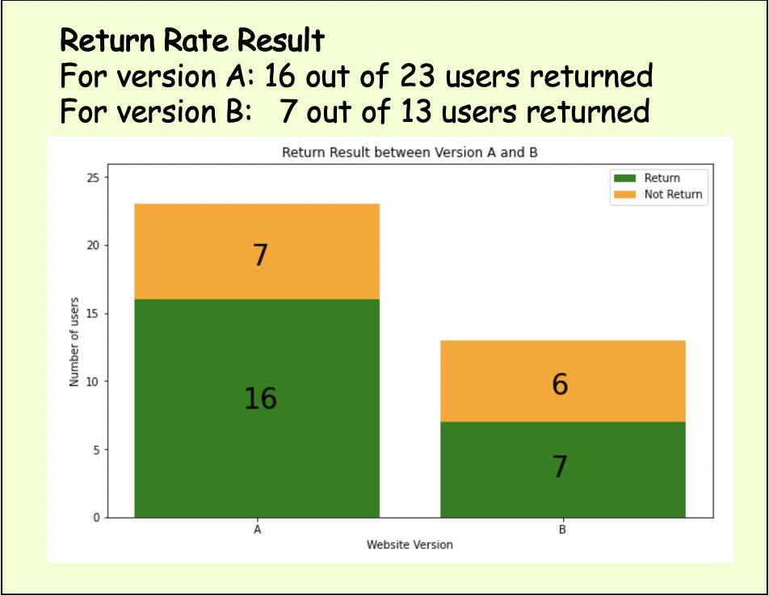
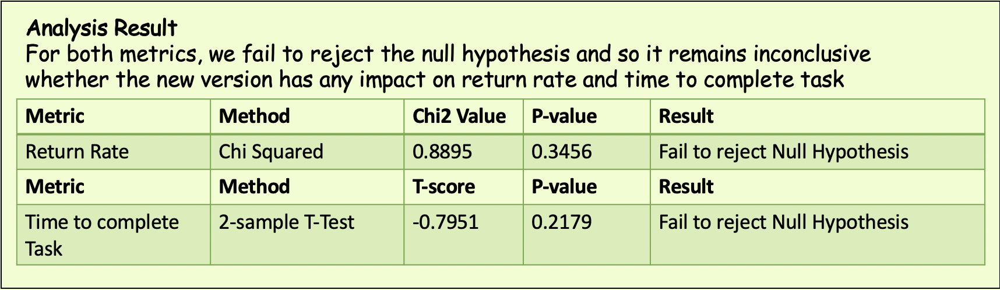

ABTesting: Which Cactus Shop Design Should We Use?
This webpage is an assignment for my class CSCI1300: UI/UX at Brown University.
For this assignment, I will be editing a (fake) cactus selling website into two versions, and then use statistics
to analyze business metrics like return rate and time-to-complete-task to identify if the new version is better.
The cactus shop website we'll be looking at today is linked down below.
My CACTUS SHOP Website
There are two versions of the site.
Version A

Version B

In version A, which is the original site, there is a lot of space on the right.
So in version B, I keep the same style but center most components and change the shopping cart color from red to a
friendlier blue. In the next section I will discuss the hypothesis about these changes.
Hypotheses
For this fake cactus shop, we care about two metrics:
- Return Rate: The fraction of users who return to the shop after completing purchase
- Time-to-complete-task: The amount of time between user's page load time and last action
Return Rate Hypotheses
Null Hypothesis: There is no statistically significant difference in the return rate of version A and version B.
Alternative Hypothesis: Version A has higher return rate than version B.
Return Rate Hypotheses Explanation
The alternative hypothesis suggests that version A has higher return rate than version B because some users,
especially those taking this class, might be curious to see what version B looks like and hence the expected higher return rate.
(I know that this is not related to our cactus business but it's the truth...)
Time-to-complete-task Hypotheses
Null Hypothesis: There is no statistically significant difference in the time-to-complete-task of version A and version B.
Alternative Hypothesis: Version B has, on average, less time-to-complete-task than version A.
Return Rate Hypotheses Explanation
The alternative hypothesis suggests that version B has lower time-to-complete-task than version A because the elements
of the page is more centered. Most people keep their cursor near the center of the page and so it should be faster to click
on version B.
Data Collection
Unfortunately, some of the data are loss before the heroku 1500 latest log bug is discovered, and so part of the log
is lost forever. The log used in calculation is concatenated from several smaller logs obtained at different time.
Most of the testing users are from cs1300 lab or piazza post, and so they are aware that there exists different versions of the interface.
All data cleaning and calculation is done in python using Numpy and Pandas.
Link to cleaning/calculation notebook
Result and Analysis
The following infographic shows our result.




Conclusion
The result from this experiment is inconclusive. It is worth noting though, that although our p-values do not quite
break our cutoff of 0.05, our result still suggests that our alternative hypotheses have probabilities to be correct at ~70%(p-value is the chance
of the null hypothesis being true and us observing this result). Therefore, this has shown that even small changes in user-interface
like us centering content can have impact on how users interact with the site.
The biggest limitation of this experiment is the limit
in data points, especially since we only got fewer than 10 users for version B. With more testing users, we would have more statistical confidence on
whether the change to the site is meaningful or not, and so traffic is important for AB Testing.